Multistep-reaction-profiles
Multistep reaction profiles
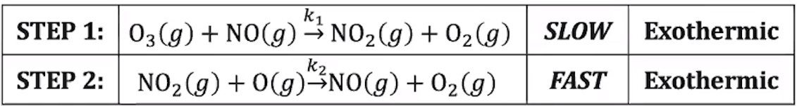{width="7.84375in" height="1.0416666666666667in"}
 {width="5.5in" height="3.6145833333333335in"}
{width="5.5in" height="3.6145833333333335in"}
-
Each "peak" represents a step
-
First step is slow
- Higher activation energy => slower (fewer adequate collisions)
-
Both are exothermic:
- 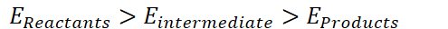{width="5.15625in" height="0.3333333333333333in"}
-
The addition of a catalyst typically leads to at least a two-step mechanism
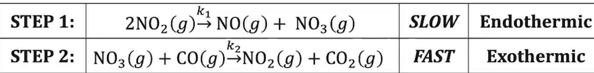{width="7.635416666666667in" height="0.9479166666666666in"}
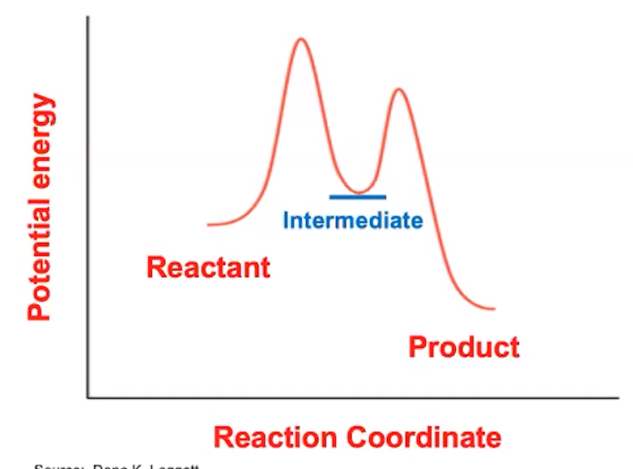{width="4.145833333333333in" height="3.0729166666666665in"}
-
First step is slow => higher activation energy
-
First step is endothermic
- 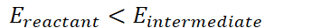{width="3.59375in" height="0.3333333333333333in"}
-
Second step is exothermic
- 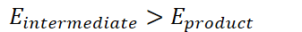{width="3.5104166666666665in" height="0.375in"}
-
Overall reaction is exothermic
- 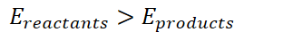{width="3.25in" height="0.375in"}
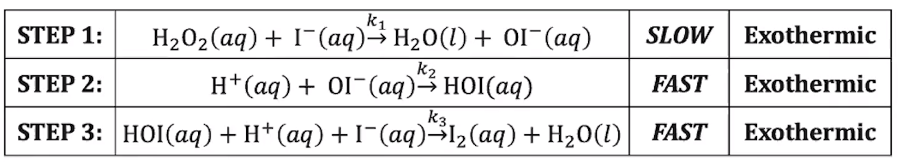{width="6.09375in" height="1.1145833333333333in"}
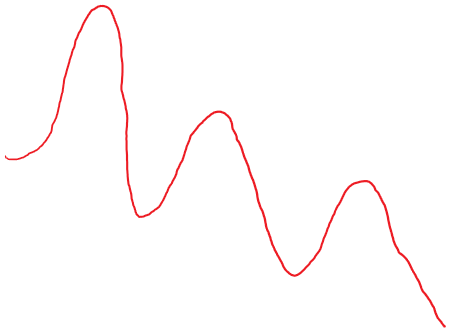{width="4.677083333333333in" height="3.4479166666666665in"}{width="0.2916666666666667in" height="1.65625in"}
Activated complex/
Act wed complex z
'riff-or
Potation Every .
in
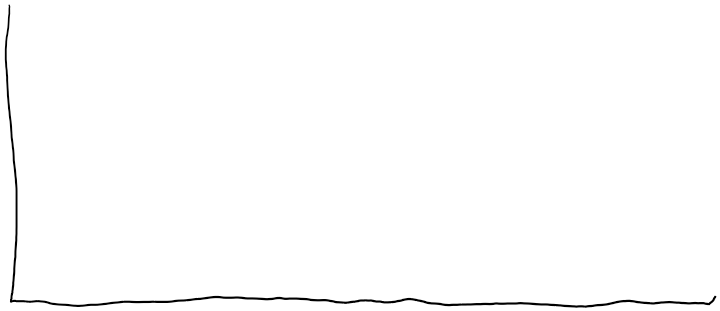{width="7.5in" height="3.2395833333333335in"}{width="0.25in" height="1.15625in"}{width="1.0in" height="0.125in"}
Activated complex}
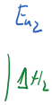{width="0.6041666666666666in" height="1.21875in"}
{width="0.22916666666666666in" height="1.0416666666666667in"}{width="1.3125in" height="0.14583333333333334in"}
ten
Ashy
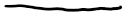{width="1.3020833333333333in" height="0.15625in"}
{width="1.7291666666666667in" height="0.15625in"}
scout
Reaction coo-din we